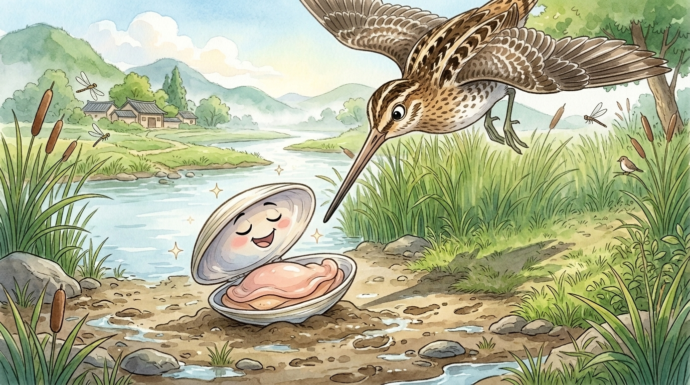
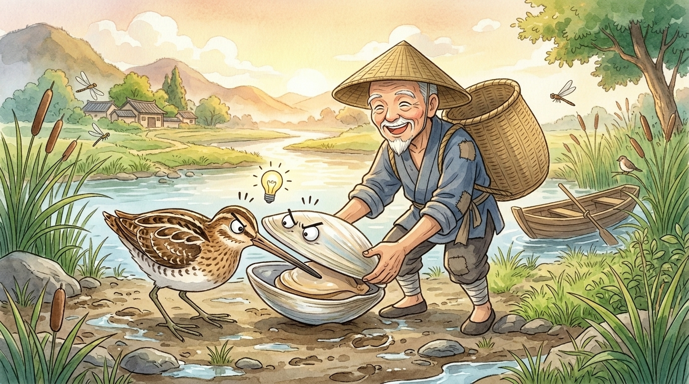
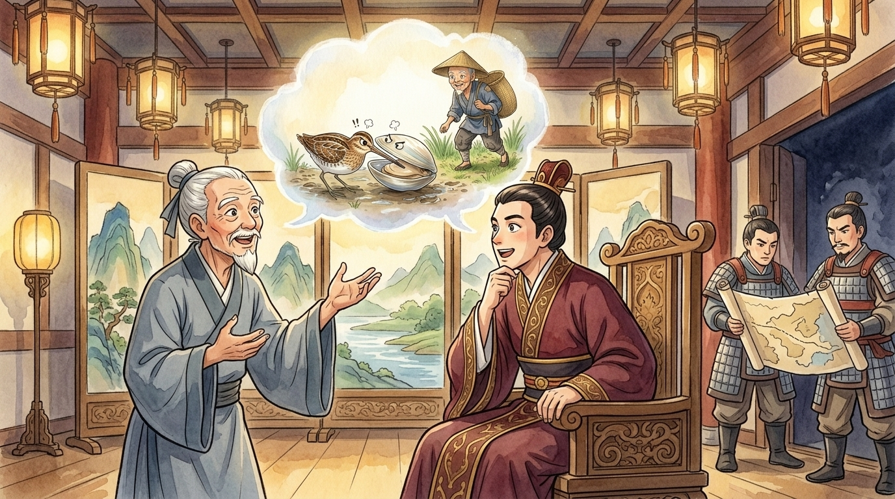

🎥 Somewhere in northern China, 2,300 years ago… morning mist rises off the gentle Yi River (易水). Welcome, viewers, to the riverbank — nature's grandest theatre. Today we follow two remarkable creatures on the mudflats, in a drama that will end… unexpectedly. Keep very still. The clam (蚌) is waking up.1
🎥 Scene one: a lovely day for a sunbath
Here she is — a magnificent freshwater clam, veteran of a thousand quiet river mornings, emerging from the shallows onto the warm mud. She has survived herons, otters, floods and fishing boys, all with the same simple policy: stay shut. Observe as she opens her shell to sun herself: a rare moment of vulnerability for this armoured recluse. Clams, viewers, have exactly one defensive move, but it is a masterpiece: the SNAP. Nothing that has ever been caught in a clam's closing shell has enjoyed the experience.
And — hold on. Cameras up. Descending from the reeds on elegant wings: a snipe (鷸), the river's long-beaked professional. That beak is a precision instrument for extracting shellfish, and this particular snipe has just spotted an open clam the way you spot an unattended plate of egg tarts. She lands. She stalks. She strikes — a lightning peck straight between the shells!
And the clam does the one thing clams do. SNAP.

🎥 Scene two: the negotiation (a masterclass in how not to)
An extraordinary scene, viewers: the snipe's beak is clamped tight inside the shell, and the clam is clamped tight around the beak. Bird cannot fly; clam cannot swim. Each holds the other perfectly hostage. And now — listen closely — they begin to negotiate. (We translate from the original riverbank.)
Superb threats on both sides, viewers. Factually accurate. Confidently delivered. And utterly, majestically USELESS — because notice what neither creature says: "How do we both get out of this?" Each is so fixed on winning the quarrel (爭吵) that the quarrel has quietly become the only thing either of them owns. The sun climbs. The mud warms. Neither budges. Pride, viewers, is the only creature on this riverbank with no natural predator.2
And here is the detail our cameras find most fascinating: both of them are RIGHT. The clam really can outlast the bird's patience; the snipe really can outlast the clam's dampness. Being right is precisely the problem. When both sides are certain they can win the waiting game, nobody feels the tiniest need to stop playing it. Study their eyes in our close-up, viewers: no fear at all. Each one is already composing a victory speech. Neither has noticed that the tide of the argument has stranded them both in the open — visible, motionless, and conveniently packaged together in one easy-to-carry bundle.
🎥 Scene three: enter the professional
But wait. Wading into frame, viewers, comes the river's true apex predator — and he doesn't have wings OR armour. He has a basket. A local fisherman (漁夫), out checking his lines, has spotted something you don't see every morning: a snipe and a clam, locked together on the open mud, both far too busy hating each other to notice him. Watch his technique closely. He bends down. He picks them up. Both of them. At once. That's it. That's the whole technique.3
Into the basket goes the snipe. Into the basket goes the clam. The most secure grip on the river and the sharpest beak in the sky — carried off to market by a man who needed neither, because two fighters who refuse to let go (放手) will always, eventually, be collected by somebody else.

🎥 The camera pulls back…
…and reveals, viewers, that this entire documentary has been playing not on a riverbank, but in a THRONE ROOM. The "projector" is a travelling persuader named Su Dai (蘇代), and his audience of one is King Hui of Zhao (趙惠文王) — who, this very week, is preparing to invade the neighbouring state of Yan (燕). Su Dai finishes his riverbank tale, bows, and delivers the twist:4
And King Hui — no fool, whatever his neighbours said — sat quiet a moment and answered: "Well said." The invasion was cancelled. Two states kept their strength, and the western fisherman, that year at least, went home with an empty basket. One little animal story, viewers, saved two kingdoms — and gave the Chinese language one of its most-used warnings: 鷸蚌相爭，漁翁得利 — "when the snipe and the clam fight, the fisherman wins."5

🎥 Closing narration
What makes this little fable immortal, viewers, is that it needs no palace to happen in — the fisherman never stops being real. Wherever two sides lock beaks — two rival shops undercutting each other into ruin while a third quietly takes their customers; two classmates feuding over the team captaincy until the coach picks somebody else entirely; two siblings wrestling over the last egg tart while the dog eats it — there is ALWAYS a fisherman on the bank. The fight itself summons him.
So the next time you're mid-quarrel, gripping tight, absolutely CERTAIN you can outlast the other side — pause the documentary. Look around the riverbank. Ask the only question that matters: "While we two are fighting… who is holding the basket?" Sometimes the smartest move in the whole animal kingdom is simply: let go, and share the sunny mudflat. Peace (和平), viewers, is not the boring option — it's the winning one. This has been River Planet. 🎥